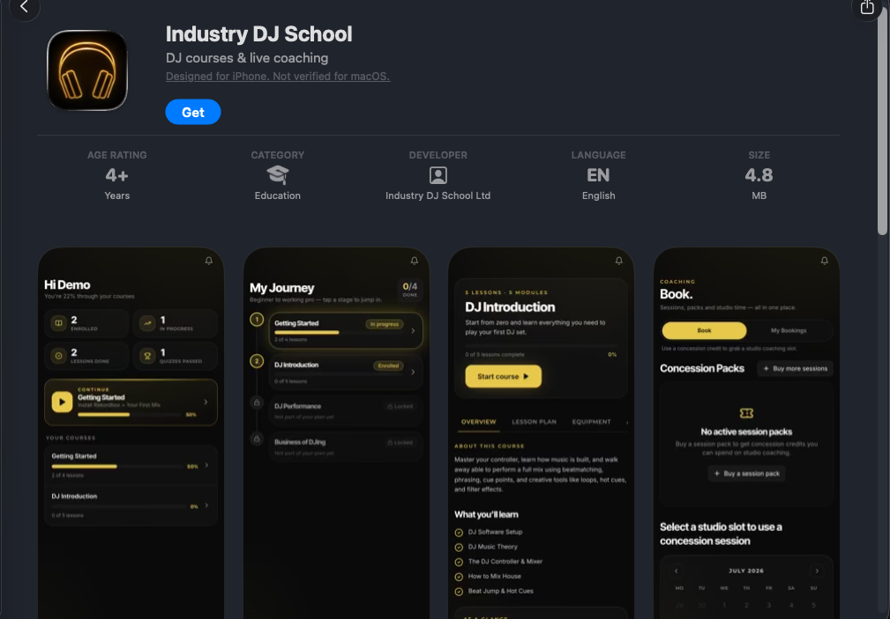
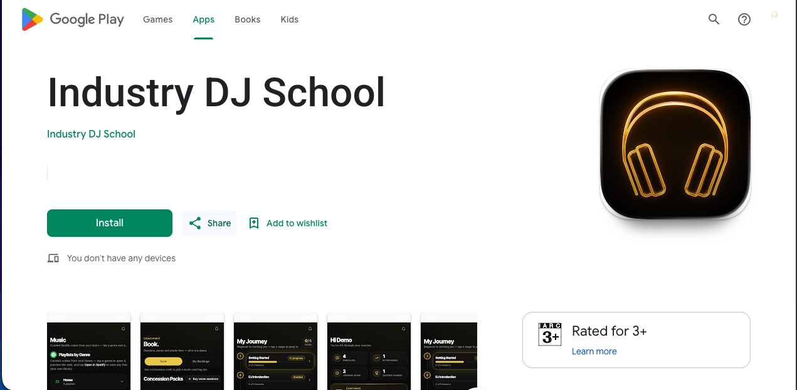
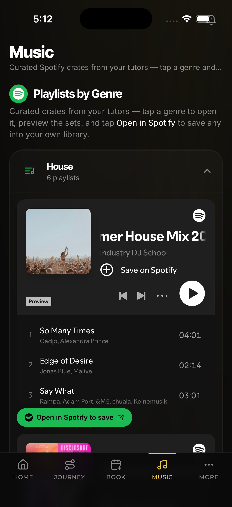
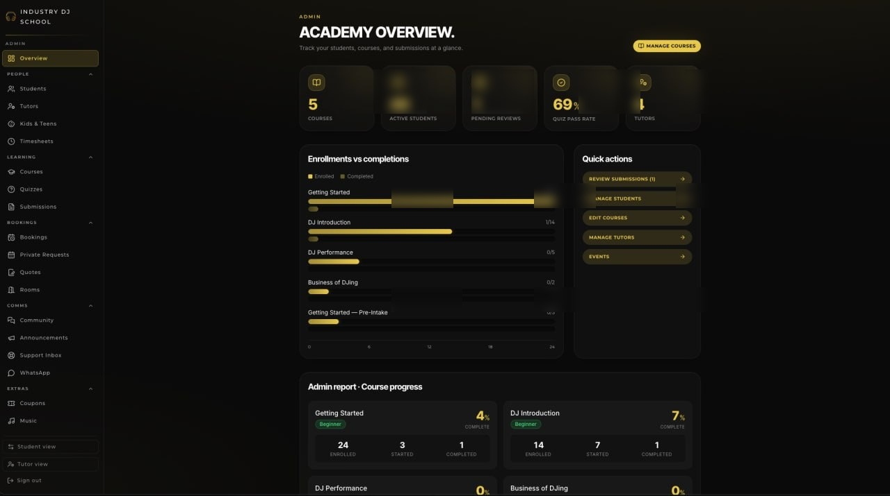
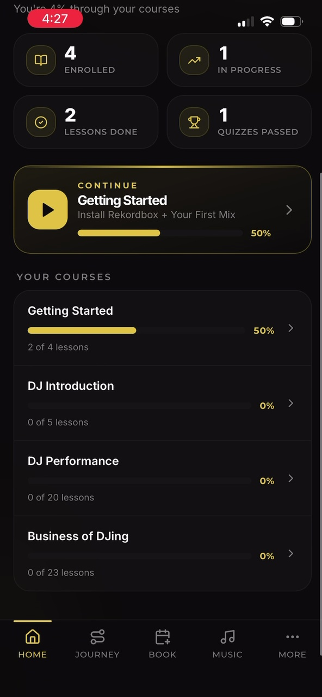
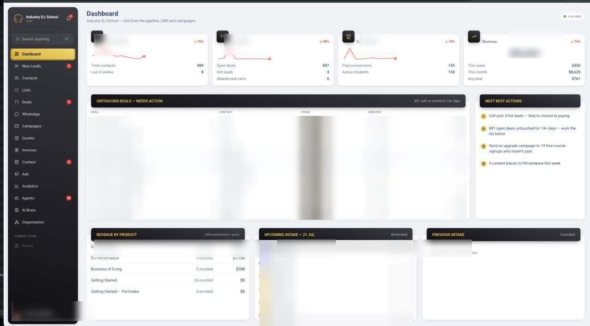
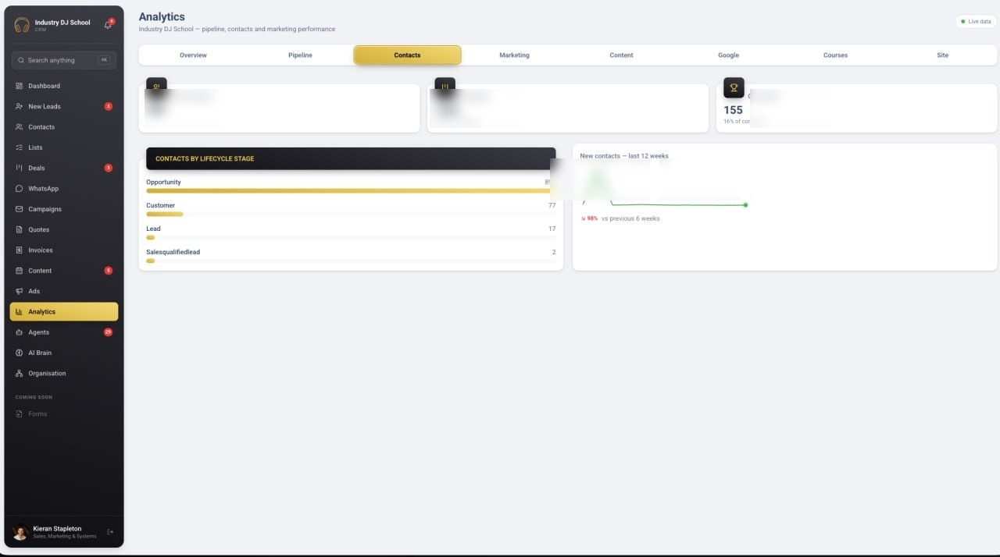
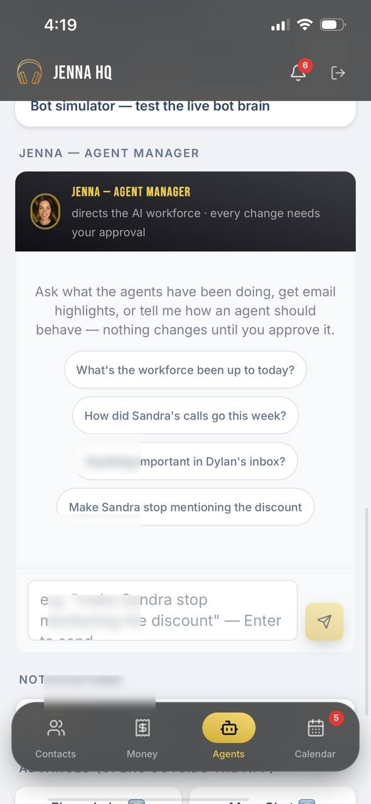
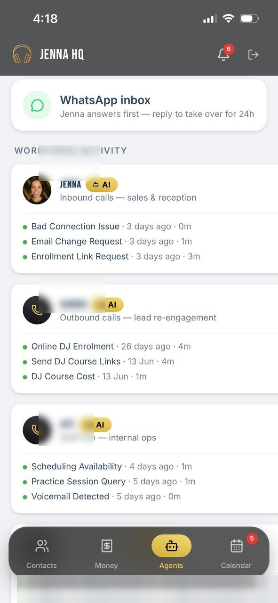

App Store listing
Product identity and shipped iPhone surfaces in their store context.
A visual index of selected systems, product surfaces and representative engineering patterns. The production repositories are private; this public companion contains sanitized screenshots, architecture notes, mock data and small examples that explain how the systems are put together.
One product across web, iOS and Android: course progress, protected lessons, booking, coaching and a Spotify-connected music surface.

Product identity and shipped iPhone surfaces in their store context.

The Android distribution surface for the same product.

Curated Spotify playlists, preview playback and save-to-library actions.

Course progress, enrolment state, quiz gating and operational reporting.

Progress at a glance with a one-tap resume path.
The interesting part is the boundary between AI and operations: agents call controlled tools, staff use the same contracts, and writes remain auditable.

Pipeline, next-best actions, reporting and revenue views. Sensitive values and names are locally blurred; the UI structure remains visible.

Contact stages and trend views connected to the same operating data.

Human approval before an AI workforce change takes effect.

Calls, messages and agent activity surfaced for review.
Pre-call context, live coaching and post-call follow-up in one workflow. Screenshots and call content remain private.
See the representative examples for signature verification, idempotent webhooks and authorized agent tools. The full system boundary is documented in the architecture overview.